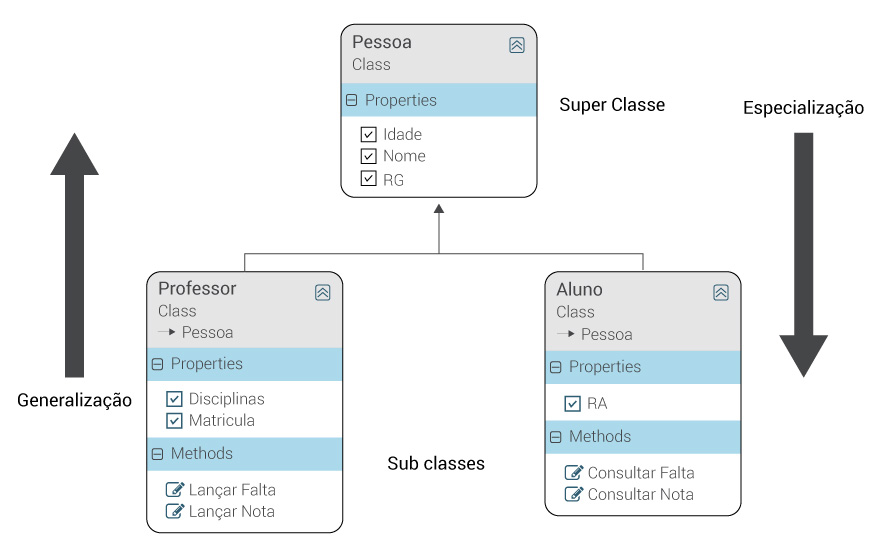

Herança
O conceito de herança é muito similar ao exemplo biológico, onde um pai ou uma mãe podem possuir descendentes, seus filhos, ou seja, os filhos herdam de seus pais algumas das características genéticas.
Em orientação a objetos é muito semelhante, pois uma classe filho, ou subclasse, herda os atributos e métodos da classe pai, ou superclasse.
Em outras palavras, uma classe possui a habilidade de herdar características de outra classe, a isso damos o nome de Herança.
Veja este exemplo de script:
Na imagem abaixo, podemos verificar uma superclasse, com seus dados mais genéricos, interligada com suas subclasses, mais específicas, em uma relação de herança entre classes "pai" e "filho".

Encapsulamento
Uma maneira de reunir e proteger os atributos e os métodos de uma classe. Uma vez isolados, o acesso ou modificação de dados só podem ser realizar pela própria classe, que disponibiliza métodos específicos para esta ação. Estes métodos normalmente são nomeados com métodos getters (leitura) e setters (alteração).
Abstração
A abstração é formada por um conjunto de heranças, onde uma classe abstrata pode apenas servir de modelo para outras classes, ou seja, um objeto não pode ser instanciado de uma classe abstrata.
A criação de classes abstratas serve para criar um maior grau de generalização entre classes.
Polimorfismo
Quando mais de uma classe utiliza um mesmo método ou atributo, podemos utilizar o polimorfismo para implementar esta funcionalidade.
Entre uma das vantagens é padronizar a nomenclatura dos métodos, com comportamentos diferentes e de acordo com a sua respectiva classe.
Exemplo:
No exemplo abaixo veremos a implementação de algumas destas caracteristicas da orientação a objetos.
Veja o exemplo: